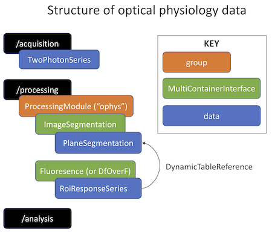

Neurodata Without Borders: Neurophysiology (NWB:N), Calcium Imaging Tutorial
How to write ophys data to an NWB file using matnwb.
author: Ben Dichter contact: ben.dichter@gmail.com last edited: May 14, 2019
Contents
This tutorial will demonstrate how to write calcium imaging data. The workflow demonstrated here involves three main steps:
1. Acquiring two-photon images 2. Image segmentation 3. Fluorescence and dF/F response
The data we output will be in the following structure:

NWB file
All contents get added to the NWB file, which is created with the following command
date = datetime(2018, 3, 1, 12, 0, 0); session_start_time = datetime(date, 'TimeZone', 'local'); nwb = NwbFile( ... 'session_description', 'a test NWB File', ... 'identifier', 'mouse004_day4', ... 'session_start_time', session_start_time);
You can check the contents by displaying the NwbFile object
disp(nwb);
NwbFile with properties:
nwb_version: '2.0b'
acquisition: [1×1 types.untyped.Set]
analysis: [1×1 types.untyped.Set]
file_create_date: []
general: [1×1 types.untyped.Set]
general_data_collection: []
general_devices: [1×1 types.untyped.Set]
general_experiment_description: []
general_experimenter: []
general_extracellular_ephys: [1×1 types.untyped.Set]
general_extracellular_ephys_electrodes: []
general_institution: []
general_intracellular_ephys: [1×1 types.untyped.Set]
general_intracellular_ephys_filtering: []
general_intracellular_ephys_sweep_table: []
general_keywords: []
general_lab: []
general_notes: []
general_optogenetics: [1×1 types.untyped.Set]
general_optophysiology: [1×1 types.untyped.Set]
general_pharmacology: []
general_protocol: []
general_related_publications: []
general_session_id: []
general_slices: []
general_source_script: []
general_source_script_file_name: []
general_specifications: [1×1 types.untyped.Set]
general_stimulus: []
general_subject: []
general_surgery: []
general_virus: []
identifier: 'mouse004_day4'
intervals: [1×1 types.untyped.Set]
intervals_epochs: []
intervals_invalid_times: []
intervals_trials: []
processing: [1×1 types.untyped.Set]
session_description: 'a test NWB File'
session_start_time: 2018-03-01T12:00:00.000000-05:00
stimulus_presentation: [1×1 types.untyped.Set]
stimulus_templates: [1×1 types.untyped.Set]
timestamps_reference_time: []
units: []
help: 'an NWB:N file for storing cellular-based neurophysiology data'
Subject
Subject-specific information goes in type Subject in location general_subject.
nwb.general_subject = types.core.Subject( ... 'description', 'mouse 5', 'age', '9 months', ... 'sex', 'M', 'species', 'Mus musculus');
Adding metadata about acquisition
Before you can add your data, you will need to provide some information about how that data was generated. This amounts describing the device, imaging plane and the optical channel used.
optical_channel = types.core.OpticalChannel( ... 'description', 'description', ... 'emission_lambda', 500.); device_name = 'my_device'; nwb.general_devices.set(device_name, types.core.Device()); imaging_plane_name = 'imaging_plane'; imaging_plane = types.core.ImagingPlane( ... 'optical_channel', optical_channel, ... 'description', 'a very interesting part of the brain', ... 'device', types.untyped.SoftLink(['/general/devices/' device_name]), ... 'excitation_lambda', 600., ... 'imaging_rate', 5., ... 'indicator', 'GFP', ... 'location', 'my favorite brain location', ... 'manifold', ones(3, 5, 5), ... 'manifold_conversion', 4, ... 'manifold_unit', 'm', ... 'reference_frame', 'A frame to refer to'); nwb.general_optophysiology.set(imaging_plane_name, imaging_plane); imaging_plane_path = ['/general/optophysiology/' imaging_plane_name];
TwoPhotonSeries
Acquired imaging data is stored an an object called TwoPhotonSeries and put in the acquisition folder. You may store the image series data in the HDF5 file
image_series_name = 'image_series1'; image_series = types.core.TwoPhotonSeries( ... 'imaging_plane', types.untyped.SoftLink(imaging_plane_path), ... 'starting_time_rate', 3.0, ... 'data', ones(200, 100, 1000), ... 'data_unit', 'lumens'); nwb.acquisition.set(image_series_name, image_series);
Or you may link to a tiff file externally
image_series_name = 'image_series2'; image_series = types.core.TwoPhotonSeries( ... 'external_file', 'images.tiff', ... 'imaging_plane', types.untyped.SoftLink(imaging_plane_path), ... 'external_file_starting_frame', 0, ... 'format', 'tiff', ... 'starting_time_rate', 3.0, ... 'data', NaN, ... 'data_unit', 'na'); nwb.acquisition.set(image_series_name, image_series);
Ophys Processing Module
Processed data should go in the ophys ProcessingModule. Here we create the module
ophys_module = types.core.ProcessingModule(... 'description', 'holds processed calcium imaging data');
Plane Segmentation
Now that the raw data is stored, you can add the image segmentation results. This is done with the ImageSegmentation data interface. This class has the ability to store segmentation from one or more imaging planes, which are stored via the PlaneSegmentation class. PlaneSegmentation is a table where each row represents a single ROI. Once you have your PlaneSegmentation object, you can add the an image_mask object to PlaneSegmenation. PlaneSegmentation is also a DynamicTable, which means you can add additional custom columns about the ROIs.
% generate fake image_mask data imaging_shape = [100, 200]; x = imaging_shape(1); y = imaging_shape(2); n_rois = 20; image_mask = NaN(y, x, n_rois); for i = 1:n_rois center = rand(1,2) .* [x,y]; sigma = eye(2)*2; [X1,X2] = meshgrid(1:x,1:y); X = [X1(:) X2(:)]; p = mvnpdf(X,center,sigma); Z = reshape(p,y,x); image_mask(:,:,i) = Z; end % add data to NWB structures plane_segmentation = types.core.PlaneSegmentation( ... 'colnames', {'imaging_mask', 'pixel_mask'}, ... 'description', 'output from segmenting my favorite imaging plane', ... 'id', types.core.ElementIdentifiers('data', int64(0:2)), ... 'imaging_plane', imaging_plane); plane_segmentation.image_mask = types.core.VectorData( ... 'data', image_mask, 'description', 'image masks'); img_seg = types.core.ImageSegmentation(); img_seg.planesegmentation.set('plane_segmentation', plane_segmentation) ophys_module.nwbdatainterface.set('image_segmentation', img_seg); nwb.processing.set('ophys', ophys_module);
ans =
Set with properties:
plane_segmentation: [types.core.PlaneSegmentation]
Fluoresence and RoiResponseSeries
Now that ROIs are stored, you can store RoiResponseSeries. These objects go in a Fluorescence object, which can contain one or more instances of RoiResponseSeries. Each RoiResponse Series requires a DynamicTableRegion of a PlaneSegmentation, which indicates which ROIs are being reported. In order to construct this DynamicTableRegion, you must first construct an ObjectView of the PlaneSegmentation table.
plane_seg_object_view = types.untyped.ObjectView( ... '/processing/ophys/image_segmentation/plane_segmentation'); roi_table_region = types.core.DynamicTableRegion( ... 'table', plane_seg_object_view, ... 'description', 'all_rois', ... 'data', [0 n_rois-1]'); roi_response_series = types.core.RoiResponseSeries( ... 'rois', roi_table_region, ... 'data', NaN(n_rois, 100), ... 'data_unit', 'lumens', ... 'starting_time_rate', 3.0); fluorescence = types.core.Fluorescence(); fluorescence.roiresponseseries.set('roi_response_series', roi_response_series); ophys_module.nwbdatainterface.set('fluorescence', fluorescence);
You can also use a DfOverF object instead of a Fluorescence object.
Finally, the ophys ProcessingModule is added to the NWBFile.
nwb.processing.set('ophys', ophys_module);
Write
nwbExport(nwb, 'ophys_tutorial.nwb');
Warning: Overwriting ophys_tutorial.nwb
Read
nwb = nwbRead('ophys_tutorial.nwb'); nwb.general_optophysiology.get('imaging_plane') %nwb.acquisition.get('image_series1').data.load
ans =
ImagingPlane with properties:
description: 'a very interesting part of the brain'
device: [1×1 types.untyped.SoftLink]
excitation_lambda: 600
imaging_rate: 5
indicator: 'GFP'
location: 'my favorite brain location'
manifold: [1×1 types.untyped.DataStub]
manifold_conversion: 4
manifold_unit: 'm'
opticalchannel: [1×1 types.untyped.Anon]
reference_frame: 'A frame to refer to'
help: 'Metadata about an imaging plane'